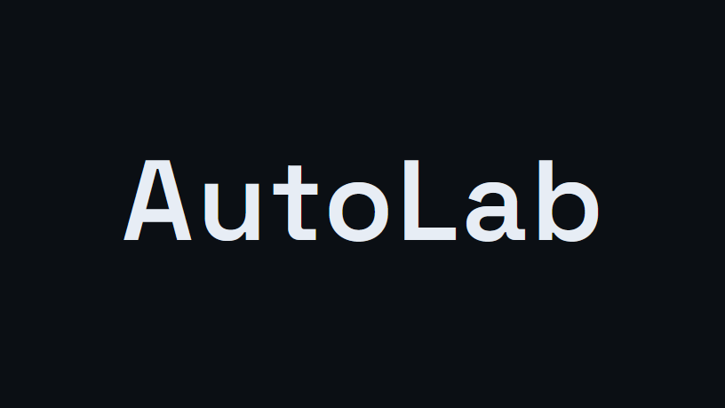
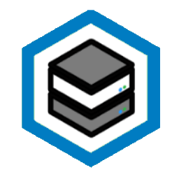

01 / 04Software + infrastructure
AutoLab
A self-hosted system for launching VS Code instances from one public entrypoint. A practical exercise in making distributed services feel like one calm, coherent product.
View repository ↗Selected work / 2022—now
Some polished, some experimental, all made to answer a real question.

01 / 04Software + infrastructure
A self-hosted system for launching VS Code instances from one public entrypoint. A practical exercise in making distributed services feel like one calm, coherent product.
View repository ↗ 02 / 04
02 / 04Team project / 3D + web
An interactive web experience built around a Blender model, real-time animation, and the satisfying challenge of a physical puzzle.
View repository ↗Digital modelling
A 3ds Max study of the iconic lighthouse, including textured modelling, water simulation, and a series of changing light conditions.

04 / 04Personal infrastructure
A small, self-hosted alternative to the cloud: synced notes, private photos, media streaming, and automated backups running on repurposed hardware.